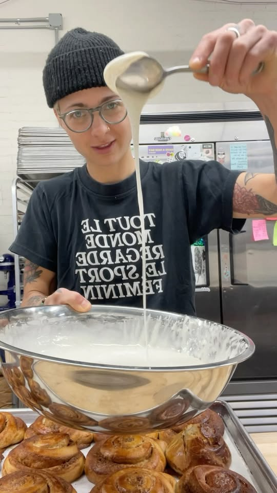

Our Story
The 48-Hour Promise
Born from a passion for the traditional methods that modern convenience forgot, The Elder Bread was founded on a simple premise: great bread cannot be rushed. Our sourdough culture has been nurtured daily for over three decades.
We source our grain from heritage growers who prioritize soil health as much as yield. Each loaf spends 48 hours cold-proofing, allowing the natural enzymes to break down gluten and unlock flavors impossible to replicate with commercial yeast.
"We are simply stewards of a process that is thousands of years old."